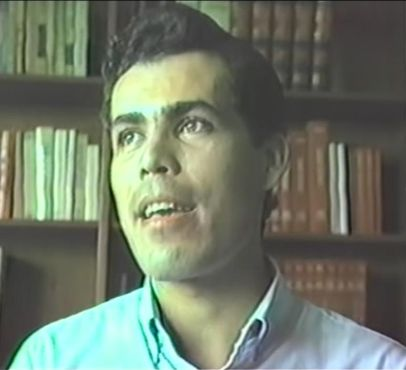
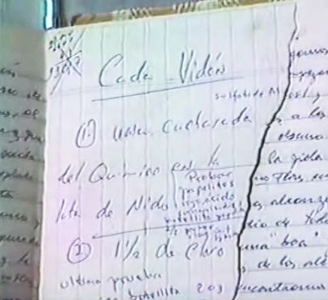
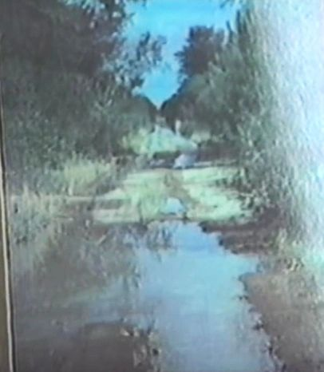
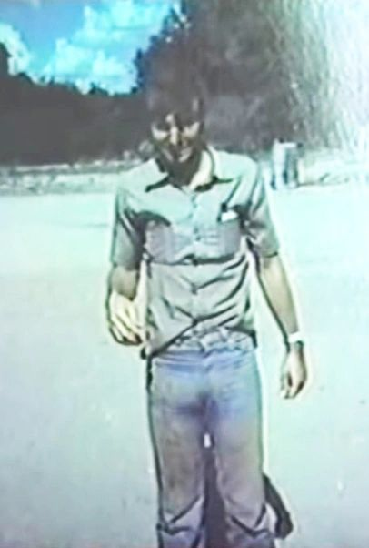
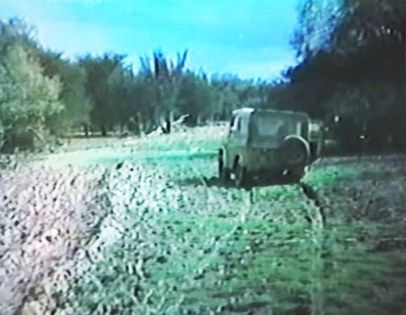
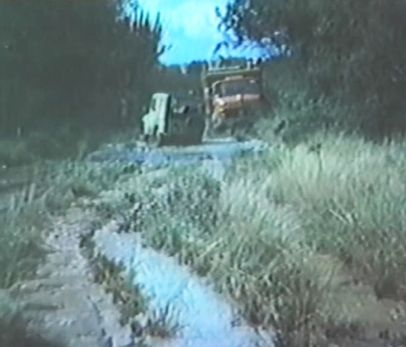
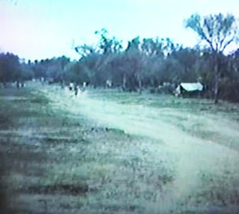
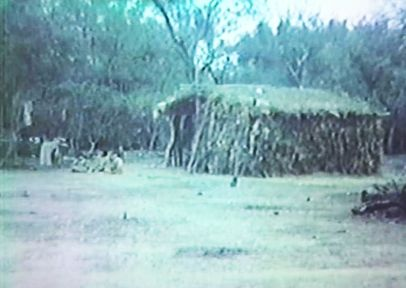

The unique and developing history
of the Nivaclé communities
descending from Mistolar
[Wilfrido Ozuna (who passed away in 2006) was interviewed in 1989 by Nestor Curbelo, who has kindly allowed the transcription, translation, and presentation of the interview here.]
Néstor Curbelo: Today is the 21st of October, 1989. We are in the Institute of Religion of Asuncion, Paraguay. And the purpose is to have an interview, an oral history, with an ex missionary who served in Mistolar. And so I begin by asking you your name again.
Wilfrido Ozuna: My name is Wilfrido Guzmán Ozuna Acuña.

Curbelo: And how long have you been in the Church, Wilfrido?
Ozuna: Actually, this month of October, it’s been 13 years since I was baptized.
Curbelo: Thirteen years. Your family are members of the Church, or just you? Your family as well?
Ozuna: Yes. All my immediate family are members of the Church, my parents, my siblings, we’re actually not a large family. All are members of the Church.
Curbelo: And what’s your educational experience, what have you studied? Have you studied, are you working, what’s your situation?
Ozuna: Yes, I studied mathematics. Now I’m studying electronic engineering. And, I teach mathematics at home. I’m studying electronics.
Curbelo: Are you married now, or still single?
Ozuna: Single.
Curbelo: Well, very well. On this occasion we’re not going to concentrate on the aspects of your own life and experience. Rather we’ll concentrate on those two, three months of service in Mistolar as a missionary. Which mission president did you serve with?
Ozuna: President Bair, Mearl K. Bair, and President Quinn.
Curbelo: President Quinn. In what period, you just told me the date of mission service. When did you begin and when did you finish?
Ozuna: The mission?
Curbelo: Yes.
Ozuna: In June, the 13th of June, 1979. I finished the 24th of June, 1981.
Curbelo: Quickly, where did you serve in the mission?
Ozuna: First I was in Caaguazú one week, 6 months in Ypacaraí, I was in Barrero Grande for 2 months. I had the privilege of serving as missionary in that area, here in Paraguay. And afterwards I went to Arroyos y Esteros for 9 months, 5 months in Villa Rica, and two and a half months in Mistolar.
Curbelo: Mistolar was your last area?
Ozuna: My last area, exactly.
Curbelo: Ok. What were your feelings when you received the transfer to Mistolar?
Ozuna: Actually, it was a surprise. I had like two and a half months left in my mission. I expected to finish in Villa Rica. And it was a big surprise when the mission president told me, he called me personally, and told me I had to hurry to Asuncion because I had a change. I was called as zone leader, and at the same time, as missionary to Mistolar, a place where all the missionaries in the mission at the time wanted to go. And really, I felt very, very happy.
Curbelo: What was the opinion of the missionaries at that time about Mistolar? How did they view Mistolar?
Ozuna: In my opinion, it was a place to have a different type of experience, because of the place itself, practically uninhabited, and all that. And I think all the guys of that age were looking for new things, adventures. I think that was the reason all of us wanted to go there. But I think one of the main reasons was the fact that those who were there, the two companions Elders Blosil and Loynd, had many baptisms. And since we all wanted to baptize a large number of people, we were interested in going there.
Curbelo: Could you describe a bit how your transfer took place? Were you in Asuncion? How did you travel to Mistolar?
Ozuna: It was Sunday, the 20th I think, the 20th of April, 1981, and I received a phone call. The president told me that I had to come to Asuncion, because I was working in Villa Rica, right away. That on Tuesday I had to leave for Mistolar. And the interesting thing was that this was Easter week, the end of Easter week, it was Easter Monday, and all the people were coming to Asuncion. And it was very hard to find a spot, a bus to be able to come. And we had to ride standing, with my companion, with all my things. And also all my clothes were wet. The lady who washed laundry was a member of the Church. I had to go and put it in a bag as it was, and carry it in my suitcase, which made it even heavier, and we came running. We arrived on Monday afternoon, and the next morning we had to leave for Mistolar. And I remember that I saw my name there, as a new zone leader, the zone that included Mistolar. And, I felt really happy. I met Elder Blosil. And the next day we left for Mistolar with the jeep, the famous Daihatsu.
Curbelo: And, the missionaries of Mistolar, did they come frequently to Asuncion at that time?
Ozuna: Yes. They came frequently.
Curbelo: They had their own vehicle?
Ozuna: Exactly.
Curbelo: Ah, that’s what made things possible.
Ozuna: It was a vehicle exclusively for the Chaco.
Curbelo: Could you continue describing what your transfer was like, what were your impressions when you began to travel on the road? Also describing the road, the place, and anything else.
Ozuna: Perfect. We left around one in the afternoon of the 22nd. I could be mistaken, but I believe it was the 22nd or 21st of April. In the evening we arrived at one of the Mennonite colonies, Filadelfia, which was 570 kilometers from Asuncion more or less. We were in the hotel that night, and on the next day early in the morning we left for Mistolar. I was very joyful about the experience that I was already having, and that I was also sure was coming.
Curbelo: The dirt, the dust of the Chaco, and the sun.
Ozuna: Yes, and, on the road, my companion told me they had an experience, or rather Elder Blosil told me that with Elder Loynd they had an experience the previous September, or rather in September of 1980, which was the Chaco Rally. And they were coming to Asuncion, and they ended up in the rally, and all that. And, then, we eventually arrived, around nightfall, after I believe nearly 10 hours of travel. And after finishing my mission I realized the danger that we were in, and which we, I don’t know why, didn’t see, we weren’t afraid. We had our mind, our mission, on that which we were going to do there, and we weren’t afraid. I suppose that for a hundred kilometers all around there were no people, and nobody to help us if something happened.
Curbelo: What are the most common dangers in Mistolar, for a person? What type of dangers can you identify?
Ozuna: If for some reason, something happened to the jeep, and we can’t continue the trip, we would have to stay quite a while there until, who knows when, someone could help us. And we would have to survive in that place where there was very little water, and the little water that there was was swamp water, probably contaminated. And, I never lived in a place like that, and neither had my companion I think, because he was from San Francisco, in California. And we don’t know, neither one of us knew how to survive in a jungle, let’s say. That’s one thing. There were wild animals. We saw some tigers, here we call them jaguars, an American tiger. Pumas, and more than that there were a ton of snakes, which were very dangerous.
Curbelo: What type of snakes?
Ozuna: Well, I managed to see on one occasion at night what is commonly known as a boa, I believe in Spanish. In Guarani it has a special name, I don’t remember it now in Guarani. And also, rattlesnake. And the other snake, the one that had so many colors. I think I was more afraid of that one than any other thing.
Curbelo: Is there any type of animal in the region that could attack without being provoked?
Ozuna: I don’t think so. The jaguar, could be, if it was hungry. But at least around Mistolar there weren’t any of those kinds of animals. Mainly the wild boar. Possibly, on one occasion I saw a wild boar, and it was quite dangerous, and I remember that brother Flores called us, and told us to leave that place. In that sense, there was danger. Luckily, I think that in the time that I was there, my Heavenly Father protected me very well. I didn’t experience any type of great danger.
Curbelo: And, very well. You arrived in Mistolar. What impression, what did you feel when you arrived there, saw the huts, the chapel that they needed to build at that time, what was your impression?
Ozuna: Well, I thought that in Asuncion, people who live in a place known here as the Chacarita, live, and are very poor, their house and all that, and we say they live in squalor, etc., but when I saw them, and compared them to the people that live here in Asuncion who say they are poor, very humble, who don’t have much; compared to them, those who live here are practically rich. Then I realized that poverty actually exists. I’m referring to temporal things. Because afterwards I realized that with regards to spiritual things, they were actually very rich.
Then, I was impressed by the odor of fish. It was amazing. Kilometers before arriving, I could smell that. Because, at that time, from about April or May until September or October, about all they ate was fish. Which were dorado, surubí, and a fish called, let’s see, poga? And for almost four or five months they lived almost entirely on fish. Then, they all had that special aroma. And since we hadn’t eaten any fish, we could smell it. But they couldn’t.
When I arrived, 400 members of the community shook my hand. They stood in line, and each one of them greeted me, saying “lhnam”, which means “hello” more or less. And they taught me that I had to respond “janam”, which also means “hello”, but the one arriving says “janam”, and the one receiving people says “lhnam”. And everyone said that to me. And I had to respond and say “very well” which more or less is “tajulhey”, they tell you. And I shook hands with all 400, and the spirit that I felt was really amazing. That’s when I began to cry. Because several times I felt the spirit, and I felt that they were children of God, that our Heavenly Father was actually there, and I couldn’t contain myself, and showed my joy and happiness through tears. And I remember that occasion very well. Afterwards I had to carry my arm like this kind of, because of shaking 400 hands.

Curbelo: Wilfrido, could you describe a little how you got settled? I was in that place, not the place where you were, but a place I suppose was similar. How did your stay in Mistolar develop, let’s say, temporally, physically?
Ozuna: Well. I don’t know if you saw the photos. There are some huts there built with tree trunks.
Curbelo: Vertical.
Ozuna: Exactly. And with branches and mud on the roof. Well. One of those huts was for us. When I arrived, it was still hot, in April of 1981. I remember that we didn’t sleep in that hut. I had a table, and my companion a bench. And we slept under a tree for several weeks. Afterwards, as you saw the chapel, part of it was enclosed with planks, and that was installed as our room. And mainly we slept there, as far as housing.
Curbelo: How did you eat, how was the food organized? Because the conditions of those of us who are in the city all our lives are very different than the customs and possibilities of the place. How were your meals and daily things organized?
Ozuna: As far as the food, my companion and I took canned goods. For bread we took those small rolls that we call coquitos here. And we took noodles, and tomato sauce to go with them sometimes. But mainly, we ate fish along with the people. Also some small zucchini that we would boil and eat plain, I learned to eat them like that, no salt, nothing, straight boiled zucchini. And I learned to each fish, something I hadn’t liked much.
But on top of eating they showed me the skeleton, what the fish was like, where the little bones were larger, thicker, and where they were smaller and more dangerous. And I remember that on the first night I was there I ate a whole fish, and it took me nearly three hours, because I was afraid of the bones. Later, near the end of my mission, I could do it in less time, I learned how to eat it.
And something, referring to eating fish, I remember. I had seen one family, they were eating, and had a small kid two years old. Nobody paid attention to him, “Be careful with the bones”, nothing. He was all by himself, and they told me that never in their history had anyone died or had problems from choking on a fish bone. And that caught my attention. And I said to myself “Without a doubt our Heavenly Father takes care of these people”.
Curbelo: Very well. How, to what extent did you participate in their daily life? Did you go to eat in their huts, and eat with them, participate in all their things, or, did you just receive some cooked food?
Ozuna: Mainly we ate in our hut with my companion. One of the brethren, an Indian, who was Nicodemo and another as well, would come and they themselves would prepare everything having to do with the fish. Fish soup, fried fish, barbecued, or baked, like they were used to doing. They prepared it, we didn’t prepare it.
Curbelo: Was the food actually tasty, or just good enough to subsist on?
Ozuna: It’s incredible, but, the fish soup just had water, salt, and fish. And for me it was delicious. If I were to eat it now I probably wouldn’t like it. And I ask myself “Is it because I was hungry, is that why I liked it so much and it tasted so good?” I don’t know, but it was very tasty for me.
Curbelo: Where did you get water? Because the water there is dirty water, let’s say. I wouldn’t call it potable.
Ozuna: Yes, dirty water. Here it is.

This shows the chemical products that we used to purify the water. I think, I didn’t understand very well, my companion did, but he had left this, as a souvenir. We used aluminum sulfate I believe to precipitate the mud, because the water from the lagoon was a brown color, completely brown…
Curbelo: Yes yes, I saw it yesterday, no, the day before yesterday, very, really it’s…
Ozuna: They drank it like that. They didn’t get sick, I don't think. Now we were counseled by the mission president, we used this. And with these chemical products we made the mud drop down a little more, and we drank the water left on top, and we added, I think it was chlorine, yes, to purify it a little. And I and my companion drank that water.
Another time I also drank the water that they drank. I think that it ran out, I didn’t understand the procedure very well. Then I drank and nothing happened to me.
Curbelo: Very well. Could you describe a little what a typical day of missionary work in Mistolar was like?
Ozuna: Sure, why not. Very different than the work that the missionaries usually do here in the mission in the capital, in the interior of the country and in other places. There were about 500 people more or less, some 75 families I believe, at that time. Normally what we did is visit the families with the branch president. He showed me, when I was there, the families that were members of the Church and those that weren’t. And he showed me the children who were old enough to be baptized, those who weren’t members yet. And also the adults that weren’t members, and I visited their homes. And I invited them to receive a discussion, to hear something about the things of God. Most of the women didn’t speak Spanish. The elderly didn’t speak Spanish either. The teenagers spoke more or less. So I was always accompanied by the branch president, brother Isprond…
Curbelo: What’s the name of the branch president, the first president?
Ozuna: Isprond. Tolerito was his last name. There’s also quite a story about the names. Because they had strange names, sometimes a surname was the name of one of the youngsters. A typical example: One of them was called, or was given the name, Gonzalez. A surname. Now, the father of Gonzalez was called Pancho. So, in a church record appears Gonzalez Pancho because of Gonzalez being the son of Pancho. So there's quite a history behind the names.
And we visited, as I was saying, the families, and we got them together in the evening in a large group, with my companion, and we taught them the discussions. When brother Flores was there, he was the translator. When he wasn’t, a member named Nicodemo, who spoke very good Spanish too, or the branch president. Back then we taught with the big old, famous flip charts…
Curbelo: With the pyramid, the fall of the church, and all that.
Ozuna: Yes yes, exactly.
Curbelo: The 3 degrees of glory, those discussions.
Ozuna: Yes. When the discussions still had letters, discussion A, B, C was the first vision, discussion D about the plan of salvation, etc. One of the brethren would translate, and at the end of the discussion we would all have a prayer, and everyone went to their own homes, and the next day in the evening they came back again. So our activities were quite different compared with the other missionaries who worked…
Curbelo: And during the rest of the day, what things did you do?
Ozuna: Well, to not be, since Mistolar wasn’t very big, to not be in my hut, I personally visited the families. I remember, and I had to exercise my faith on one opportunity, because some of the members had tuberculosis. And we all had to be vaccinated before going there. I remember, they invited me to drink máte. And at the precise instant when they handed it to me, from such a friendly fellow with a wide smile, it was to my lips, I thought of the disease, and I was afraid. But in that very short period of time I had to decide whether to reject it and maybe, I don’t know, offend the family, or to accept it. Then I said inside myself, “Father, please, bless this”. And I drank máte with them, shared with them, was very close. Sometimes I ate in their houses. And I was always very close, visiting families, etc., and talking about the Church with them. Somebody who could translate always went with me.
Curbelo: What stories or comments did you hear from Elder Blosil, who was among the first who went to Mistolar?
Ozuna: Elder Blosil was there more than a year, the missionary who was with them for the longest time.
Curbelo: What type of person was he?
Ozuna: He didn’t say a lot. He was very quiet. When the president told me that he would be my companion, I said, “What will it be like to be with him? Because he’s quiet.” I just, knew him in passing, he would hardly say hi. And I thought, we’ll see how our companionship goes, because we’re going to spend a lot of time together, the two of us, and we will necessarily have to talk. And later I realized that he wasn’t how he seemed. He was a very special person, and, he told me many times about his life in San Francisco, he was a racer, I believe, or a fan, he wanted, he liked to race cars. He was a young man who liked to work, he didn’t like to just be there, without doing anything. He taught me many things. And he told me about the baptismal experiences that they had. And he shared his testimony with me, I felt a good spirit about him. And developed a very great love toward him.
Curbelo: How did you perceive the feeling of the members of Mistolar toward these two missionaries, the first two missionaries, Blosil and Loynd?
Ozuna: I don’t know, I didn’t know Elder Loynd well. Of what little that Elder Blosil told me, that’s all I know of Elder Loynd. Of what I know for myself, I knew Elder Loynd before, before he went to Mistolar, I saw him as a very disciplined young man. I tried to take him as an example. In my mission, especially in the early days, I wasn’t very disciplined. By inspiration the president gave me as a companion, a very disciplined companion, to help me in that. And in truth I didn’t know him very well. But Blosil a bit more or less. And I don’t really know how they must have been. But the people remember them very well. They hold them in a very special place in their hearts. When I speak with some of the brethren that tend to come here, they always remember those two. I think they were also the ones who baptized the most.
Curbelo: The baptismal services, are very personal, very special. What are the blessings that were most frequently pronounced in the confirmations? What are the common things that come to your mind that were promised?
Ozuna: What I remember is that very few times did we feel, I don’t know, inspired to say much. I don’t know if because of the time, because of the number of people who were baptized, but normally, when we placed our hands to give the Holy Spirit, we kept it quite short. I think mainly we would say for them to receive blessings according to their faithfulness. And that’s all, we finished in the name of Jesus Christ. Or rather, we didn’t add much. When I was there, I saw just twenty baptisms. Now, in the experiences that Elder Loynd and Elder Blosil had with the 200 and some odd baptisms that they had, I wouldn’t be able to say. But yes, I can say with the 20 that we had, I remember that to some of the people, Elder Blosil I believe, gave some blessings to one or two that were baptized, and were young. I don’t remember very well, but, I kept it very short. I don’t know, I didn’t feel inspired, that’s all.
Curbelo: Very well. Anything else, maybe from these two and a half months, something more, an important event that may have happened that you see as historic events?
Ozuna: The baptismal services, maybe. When I was there we already had a font. It was one of those, like a fiber glass box, that we filled from the Pilcomayo river. Before, it was done in the river. When I was there, they had already delivered one of those, like a big tank.
Curbelo: They installed it in the ground, or left it at ground level?
Ozuna: We left it at ground level. And I wonder about that, about baptism, which symbolizes the burial and all that, but still it was at ground level. But on this occasion, I don’t know for what reason, we didn’t dig any hole.
I remember the temperature well, almost freezing, in the open air, and even though I was trembling with cold, I felt a very special spirit, to see how they formed a line, something that normally here in Asuncion I had never seen. And I baptized like five or six in a row, I left the water, my companion did the same. Then one of the brethren entered, baptized two of his children I believe, he was one of the Lamanite brethren. Then he left, and I was already trembling from cold outside, since I was all wet, I got back in and baptized another four more or less. I believe it was one of the most significant experiences of the time I was there.
Also, I had one experience with a young girl who, I believe would be about 15 years old now, at that time she was eight. I remember that when I came, she looked me straight in the eyes, and greeted me, and said “lhnam” – “hello”. And we communicated through smiles because I didn’t understand her and she didn’t understand me either. I remember that I used to play with the children, I had little books with some words in Nivaclé. We didn’t understand each other much, but I made some strange gestures that the children liked a lot. And I remember this little eight year old girl well, I don’t know, it seems that she stole my heart, and she asked me to baptize her. So I baptized her and all that.
But the most significant occurrence was when she learned that I was returning to Asuncion and finishing my mission. I remember that right after the meeting that night, the president was there, who is now the president of the Antofagasta Chile mission, president Carlos Espínola, brother Aquino, brother Muños from Argentina, etc. They already knew that president Quinn was also finishing his mission. And after that meeting finished, she came near, called me like this, looked me in the eyes, and almost with tears in her eyes she said “pa’acum” which means “so long”, “goodbye”.

And I felt, I guess, like crying. I went away to a place kind of dark, and began to cry. It was one of the real beautiful experiences that I had there, and I always remember that little girl.
Curbelo: What could you say about the traditional family life of the Chulupí? How would you describe the life of the Chulupí family before they knew the Church, and afterwards, how did they incorporate the things of the Church?
Ozuna: Unfortunately, I don’t know how they lived before. When I arrived, most of the families were members of the Church, at least the families that I knew. I can say there was a great love among them. I remember one time, one of the young men, son of the branch president, was separated from the family for six months. I don’t know where. After those six months, or I don’t know a year, he returned, and his mom began to cry, the members started to cry, and he did too. And I thought that somebody must have died or something. I asked brother Flores, because it caught my attention and surprised me. And he said “Don’t worry”, and he explained that it was the manner in which they demonstrated the joy they felt to see one of their loved ones after a period of separation. And I think that, or rather, I concluded from it, that the love among them was really strong. And another thing. That maybe not just with the family, but we can suppose that if among them it wasn’t only the blood relatives that loved each other so much, I imagined that within the family they loved each other even more.
We would play volleyball. I noticed that they never ever fought, they didn’t curse or say things like, never “Why did you throw the ball there, why didn’t you throw it to me?” When they play sports, they enjoy themselves, and they’re always smiling, joyful.
Curbelo: I went with Miguel Bogado, and the first day at night when we went, we played soccer with them. Because I play in places, in Argentina, soccer in many places among brethren of the Church, and there are always problems, different types, in all, poor sportsmanship, and such things that turn up. And I noticed exactly the same thing, or rather, it’s that we played a half hour or so, and they continued playing, but I never saw or perceived any type of, only diversion, smiling, playing hard, falling on the ground. And I also saw the children playing, there on the big playground, there’s a very large place, very extensive, and the children running, some four or five boys were playing, throwing. And since I don’t understand the language, but I didn’t perceive any moment, any type of bad feeling. I don’t know if you want to comment further about…
Ozuna: Well yes, I think you said it, I had that same feeling. I realized that here among us, when there’s a tournament among wards, all that, there are always disputes, arguments, etc. I could tell that in a way, they are much more, let’s say they’re more spiritual, they’ve progressed in that sense much more than we have.
Curbelo: Did you see some type of discord among them, in the time, the two and a half months?
Ozuna: Never. At least in the time that I was there, I never saw any type of discord.
Curbelo: What bad habits and problems and difficulties that our wards have, our branches, of discord among members, jealousy…? They’re human beings too with their weaknesses…
Ozuna: In the time that I was there, actually, no, I never saw any of that. Nothing. I also think that they’re human beings, and all that, but at least in the time that I was there, it was all so tranquil. Something interesting that I learned from them, and I related it with the Book of Mormon, is the fact that when they are converted, they’re so faithful, as we read of these people of Laman, the Lamanites, when they are converted they’re so faithful to the end, and I could tell that they are also like that.
My companion, I remember that he told me before arriving, “All the things that we teach them, they do. But all the things that we teach, we’re the ones who have to do it first, or rather we have to be the example. To live the things that we say. They see us and look at us, and see our example, and say that they’ll faithfully follow us and do the things that we say, as long as we also comply with that. If they can see that we say something, but we do something else, then they lose all confidence in us. That’s one special characteristic of theirs.” That’s why I always tried to exemplify the things that I said, try to, if I spoke about love, then I tried to express my love to each one of them.
Curbelo: What else did you observe especially in your visits that you could make from house to house, from family to family, with regards to family life, their customs, their moral quality, their attitudes?
Ozuna: Regarding the treatment, for example, of father to child, of child to mother, etc, I couldn’t perceive anything special, only the fact that they were quite obedient, the children to their parents.
Curbelo: I understand that difficulties have increased with the floods, and the relocations, the movements from a place. Or rather it brought them to a more precarious situation. And seeing the photos that you just showed me, now the homes are more fragile, and all, they’re practically in transit right now. They’ve really lived through many difficulties after having left…
Very well. Now I observed that the parents with their huts, the married children with their hut very nearby. But with regards to the family order, what were your observations?
Ozuna: Normally the young people get married and move away, completely. The children themselves that are going to get married build their little house and move away. I don’t know why I didn’t pay attention to those details. But, what I can say is this, that in a sense yes they moved away and everyone lived as families.
Curbelo: What were the most serious problems that appeared, or most frequent that appeared, among members of the branch? As far as you knew.
Ozuna: With the very young, from 8 to 12, 13, 14 years old I think, there weren’t so many problems. With the young people of 17 or 18 years on up, those who weren’t members of the Church when I was in Mistolar, liked to smoke. They learned in Filadelfia, where they were before going there, and they also liked to drink alcoholic beverages. In particular, these two were the main problems why these young people were still not members of the Church. And as far as the law of chastity, at least the interviews that I had, because I spoke with teenagers and with older persons and adults, and apparently there weren’t any problems.
Many of them didn’t even have identification, or rather they didn’t have a document to identify them as an individual living in an organized society. So when they were married, for example, in reality they weren’t married according to the law of the land. But I don’t know how the Church solved it, I think that a special case, and it was considered as a, almost a separate nation.
Curbelo: Do the Chulupí have an unwritten law of marriage? Or is there a way for a young couple to get married, not according to the law of the Paraguayan nation, but by the customs and traditions of an ethnic group? Is there a written law, some manner of getting married?
Ozuna: Possibly. When brother Arenas was going to get married, as it happens, I explained to president Isprond, I told him that marriage is for eternity, and that the place where a couple is sealed for all eternity is in the temple. And he understood that. I told him that when one cannot go to the temple, the branch president can speak in the chapel and give them like a blessing. And he did that.
But I don’t know how they did it before. What I do know, about the legality of marriage, to show that in reality he and she are married legally to each other, I believe that what they did is select from the most distinguished men, heads of families. I don’t know if they were called ‘chief’, I don’t know if they were organized in that way, because I rarely heard that term. But from among the most prominent men of the town, they had witnesses that brother Arenas and sister Tolerito were really married. And so that would be like our civil law.
Curbelo: Was there a deed, an event, or a ceremony that signified marriage?
Ozuna: It’s like they had witnesses. Then these people can give testimony that they are a couple, are married. And if he tries to have another woman, then there are witnesses that in reality he is married to another. So if he does that, he’s committing a deception.
Curbelo: Were you able to see or learn something about the manner of courtship, that which we call courtship, or rather, the couple’s preparation for marriage?
Ozuna: I couldn’t tell. When they told me that brother Arenas was going to get married now, I didn’t even know that the president’s daughter was his girlfriend. I don’t know anything. It was something, a surprise really for me. It’s that I was there such little time too, and mainly we were, or rather many times we came to Asuncion, to the extent that in two and a half months I had spent barely two weeks there. Three maybe, three weeks. And then, because my companion and I were zone leaders, we had to come to Villa Hayes, to Arroyos y Esters, to Loma Pýta, other areas too, and we also had to make visits, all those things. We would come to Asuncion. And if I were to count the actual days that I was out there, it could be that I was there three or four weeks maximum.
Curbelo: How did you dress when you were in Mistolar?
Ozuna: My companion and I had boots. I remember that in Filadelfia I bought jeans, cowboy pants as we say here, a plaid shirt, and here I have a photo of my companion.
Curbelo: We’ll review the photos in a little bit. Very well. Regarding your visits to the huts, what other thing were you able to learn about them? What else caught your attention?
Ozuna: Maybe the fact that the huts had openings, they weren't sealed well. Then it got real cold, there was wind, and they slept on the ground. And I don’t know how they kept from freezing, because they didn’t have many clothes. Some children I remember, early in the morning, because there was a little school, they came to school with just short pants, and the temperature’s at freezing, or just above, and some barely had one little shirt, which didn’t even have long sleeves. And at night it was colder. They slept on the ground. Some had, this, what we in Paraguay call vacapí, which would be leather, laid right on the ground. And large families of, oh, eight, nine, or ten would sleep in one hut. I remember that they had to maintain the fire, many of the families kept a fire through the whole night, someone in the family had to be caring for it. I think that they didn’t die because there happened to be enough oxygen from the openings in the hut. Because otherwise it would have been closed in. And that drew my attention, because, well, they could stand the cold, and, I don’t know, I felt real sad, I wanted to do something so they would be more comfortable. And so, that’s one of the things that really caught my attention.
Curbelo: Let’s give an explanation of the photos, you think? We’re looking at this photo.

Ozuna: Mistolar, or rather, we could say the center where the Mistolar chapel was when I was there in 1981.
Curbelo: This is the first place of settlement, or rather, this was the place where Elder Blosil and Elder Loynd baptized?
Ozuna: Yes, exactly.
Curbelo: Before they had any flooding.
Ozuna: Exactly, before.
Curbelo: This chapel, what do you know about the construction of this chapel, or excuse me, of this meeting center?
Ozuna: Well, I know that these metal sheets, I don’t know where they were delivered from, but they were the only thing delivered I believe. Afterwards, they put this together there, they’re tree trunks, and brother Flores and they themselves…
Curbelo: When we speak of brother Flores, that’s Walter Flores.
Ozuna: Brother Walter Flores. And I was practically present during the construction, nearly the completion of the meeting center.
Curbelo: This meeting center, was built under the direction of brother Walter Flores?
Ozuna: I believe so. Whether there was another brother that was managing, I don’t remember. But I believe it was him mainly.

This house, because the huts of the members were around here, this house is where they keep the provisions. It had yerba, salt, sugar I believe, and I think that was all. If there was something else, I don’t remember.
Curbelo: For the whole group, or for you two?
Ozuna: No, for the group. This was the furniture. Moroni was a little school before, a school, and almost all the furniture, chairs etc., from Moroni had been taken to Mistolar.
Curbelo: Or rather, from that place, the Moroni Ward in Asuncion, they delivered supplies that were, if I understand, in, how do you say, in disuse.
Ozuna: Exactly.
Curbelo: To Mistolar, no? Very well. Is there some other comment about this photo, and the scene that we’re seeing?

Ozuna: My companion and I slept in this hut. When it was hot we stayed under this tree.
Curbelo: Photo on the left?

Ozuna: The typical road to Mistolar, almost 300 kilometers I think, 280, I don’t know how many exactly, from the Mennonite colonies, from Filadelfia to the Pilcomayo, were mainly, not so much like this, but a large part, when it rained, the road was in this shape.
Curbelo: Who is that in the photo to the side?

Ozuna: Elder Blosil, my companion. You might think that he threw himself on the ground to get this dirty. But in reality, the two of us were seated in the jeep, and we’re barely halfway down the road when we were dirty from the dust that was raised. You can also see that the dirt was like flour.

It looks like a lagoon. But in reality it’s the road. We had the opportunity to travel during the rainy season, and you could say that our jeep was a champion. And we passed through here and didn’t get stuck.
Curbelo: This place in the road, approximately how many kilometers is it from Mistolar?
Ozuna: I, couldn’t say exactly, but it must have been, I don’t know, it was halfway down the road from the Mennonite colonies to Mistolar.
Curbelo: Or about 150 kilometers.
Ozuna: Could be.

And this is one of the many places in the Chaco, part of the road to get to Mistolar, we were on our way, and in this part there was a small lagoon, it was quite dangerous, dangerous in that we could get stuck. And there were no trees near enough to use the winch. Then, I got out, my companion too, and we looked looked around a bit first for where exactly he could drive the jeep so we wouldn’t have a problem.

And in the photo on the right we see a truck, eleven thirteen. I remember that brother Vitale had paid 150,000 guaranies to the owner of the truck to carry the furniture that we saw earlier. And the truck couldn’t get by this spot. And then my companion went, he tried to help the truck, but we couldn’t get by. And so that truck stayed there, we returned to Mistolar, which was like 40 kilometers more or less from there, we took some men with axes and machete and all that, and they came with my companion, they made a new road through the forest so that this truck could get through. That was like around two in the afternoon, and I remember the truck arrived at noon the next day, after various similar experiences.

The vehicle is the Suzuki jeep of brother Flores, the one that brother Flores used, Walter Flores, and it had some difficulties. It turns out that several of the brethren there had mechanical skills, some were builders, brother Flores knew how to do a little of everything, and they themselves took responsibility for repairing it, putting it in condition to travel.
Curbelo: Who did this vehicle belong to?
Ozuna: The mission I think. Yes, it’s just that brother Flores and his family used it exclusively. But it was entertaining.
Curbelo: Very well. What do we see in the photo on the right?

Ozuna: It’s a typical hut of the people in Mistolar, and apparently not many houses can be seen, because they’re further back in the trees. You could say that this is the main street of Mistolar. Because the members lived more or less along this road that went directly to the Pilcomayo River. The river was more or less one kilometer from here. And the people lived along the length of this road.

A typical hut of the families in Mistolar. We can see some children. I don’t remember exactly which family’s house this is. But all the huts were similar.
Curbelo: In your opinion, why don’t they build better housing? Because they don’t have the means, because they don’t see the necessity, or because they don’t know how?
Ozuna: Well, I don’t know whether they would know how, because there are some that have skills that worked in construction, probably with the Mennonites. But I don’t know why. En reality, they don’t have the means, or they don’t have materials to make something better. But, because they only have the trees, the mud, and nothing else. If they were given materials, I don’t know if they would know how to build something better, or they need somebody’s help.
[End of video]